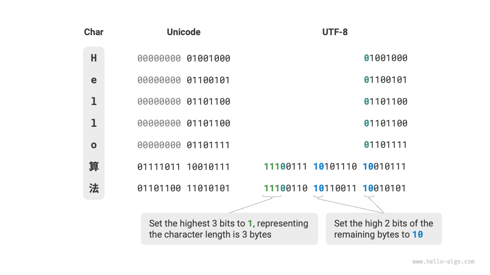
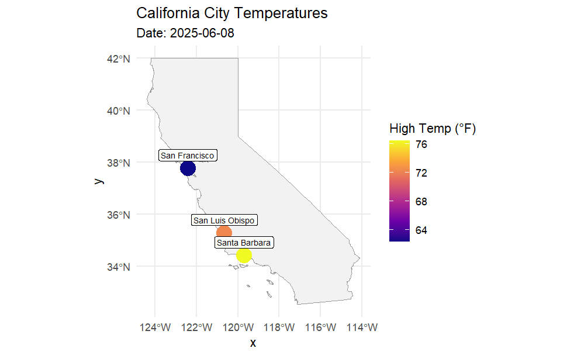

library(httr2) # Makes web requests
library(glue) # Glue StringsSession 2: Weather Data - OpenWeatherAPI
Session 2: API Fundamentals
1. Goals & Objectives
- Explain what an API is and how it supports data extraction Theoretical elements of API
- Make requests to a public API and interpret the JSON response
- Understand and apply HTTP status codes and API keys
- Write clean, readable code to extract and parse API data
(Change the based on concepte Foundation) (Mention Querying data base more as an action)
2. Conceptual Foundation
Part A. Theoretical ideas of APIs
Note 1:
This is not a webdeveloper nor a CS course but with a decent understanding of the logic, you and your students will appreciate the utilizartion of web scrapiing more
P1.
What is an API? (Again)
It is the abiluty for software to communicate
- Q1: What is its utility of APIs? (multiple choice)
Note 2: A client and server can exist on the same computer. This is often what’s happening in local development (e.g., querying a local database from R)
P2. Lets go deepeer into understanding Define:
Client API Server Database
Action: Clinet makes a request Action: Database provides a response
(TODO: Create GIF (or Image) of Request and Response that displays actions, its created, you have to actual turn it into a gif becuase it is actual a video)
P2.
Lets spend some more time on the request and response
The client sends a request asking for info (like taylor swift or today’s weather)
The server then returns a response which contains:
- data
- metadata (chatgpt: explain this simply)
- status code
Self Question: Is the request and response (data, metadata, & statuscode) usually a JSON format.
P3. Again JSON is….
P4. What are Status Codes?
Status codes tell you what happened with your request:
100s: Info200s: Success (highlight: 200 OK)300s: Redirect400s: Client error500s: Server error
Note 3:
- Emphasize: In most data APIs, your goal is to get a 200 response.
- Use examples like making up a nonexistent city or artist to show how an API might respond with a 400 or 404.
P5. What type of requests can we make?
CRUD Framework (Create, Read, Update, Delete)
Though APIs allow all four, Read (GET) is most common in data science.
RESTful API mapping:
- Create → POST
- Read → GET
- Update → PUT/PATCH
- Delete → DELETE
(TODO: Create a GIF for each the above that is really illuminating, so GET and POST GIFs, its created, you have to actual turn it into a gif becuase it is actual a video)
Note 4:
- We’ll focus mostly on GET, and occasionally show POST (e.g., retrieving personalized weather data).
- Briefly mention: Apps like Instagram or Facebook rely on all four CRUD operations—updating posts, deleting comments, etc.
P6. Setup API_Key [[Based on time do One of the three steps]]
[[1. email attendees to go to the weather website and get API key or whatever information needed before the conference. Create a video that’s displaying how to do this]] [[1a. Discuss .Renviron.txt, how we use: to create and edit API key: usethis::edit_r_environ()]] [[1b. Use Sys.getenv("API_KEY") to see API in console]] [[Note that you have to use the 1a to see the api key again]] Restart R
[[2. have attendees get the key during the break session if they have not done so already]]
[[3. use a common key, but tell them it is bad practice]]
[[regardless of the decision made of the three options above have attendees store information in the environment file]]
Note 5: there are many ways of doing this, but I’m going to stick with using tidyverse functions.I’m going to show you two ways to actually implement the query using the one way of one of the ways of doing this within a tiny verse using string glue
P7: Requests, URLs & Queries P7. so what we’re going to first do is create our response and the most ideal way. - A request begins with a URL, which contains both:
- The endpoint (base address of the API)
- The query string (additional key-value pairs that modify the request)
- We often need to glue strings together to build this full URL dynamically.
- A request is not “automatically” turned into JSON when sent — it’s the response that’s usually formatted as JSON. The request is often URL-encoded if it’s a GET.
P8: What Happens Under the Hood
- When we use a URL like
...?q=San+Luis+Obispo&appid=..., we’re constructing a query string, which is appended to the base URL. - Think of this as “asking the question”—the query string shapes the request.
- The server receives the request, processes it, and responds with structured data (typically JSON).
- We’re not sending JSON in this case—we’re sending a URL with parameters. JSON is returned to us as a response format.
P9: Two Ways to Build Request Objects
Method 1: Manual String Gluing
city_name <- "San Luis Obispo"(TODO: place video into gif of URL anantomy)
current_weather_url <- glue("https://api.openweathermap.org/data/2.5/weather?",
"q=", URLencode(city_name),
"&appid=", Sys.getenv("API_KEY"),
"&units=imperial")current_weather_urlNote 6: explicily state what each element is
req <- request(current_weather_url)Built Request Object
reqNote 7:
- This method shows the anatomy of the URL explicitly.
- Great for emphasizing how query parameters are constructed using strings.
- Helps reinforce the idea of “asking a question via the URL.”
Note 8:
- We are going to do it again in a diferent way but we are goint to process the response further here becuae
- I wanted you to undertstadn the anatomy of the URL
- Have multiple ways of doing the same thing
Method 2: Using req_url_query()
Step 1: Build Request Object
req <- request("https://api.openweathermap.org/data/2.5/weather") |>
req_url_query(
q = city_name,
appid = Sys.getenv("API_KEY"),
units = "imperial"
)reqNote 9:
- This method abstracts away the string building.
- It’s cleaner and reduces chances of typos or formatting errors.
- Teaches students to treat query arguments like named inputs.
- You can still inspect the built URL using
req$url.
Step 2: Make request
response <- req_perform(req)responseNot a step: View content Type
content <- resp_content_type(response)contentStep 3: Process the Response
## IF the status code is 200 we are good
if (resp_status(response) == 200) {
# Parse JSON
result <- resp_body_json(response)
# Print Results as JSON
print(result)
#---------------------------------------
# Convert to Data Frame directly
current_weather_df <- as.data.frame(result)
# Print Results as Data Frame
print(dplyr::select(current_weather_df, name, coord.lon, coord.lat, weather.main, main.temp))
## ELSE state there is an Error
} else {
cat("Failed. Status code:", resp_status(response), "\n")
}Note 10: There are many other variable that is given but we focus on There is more information that is given but we are interested in the body of the request, hence we use resp_body_json that takes the body and that is what we are after as a json and we then convert it into a data frame
Let’s dissect & build a function 1
(TODO: Remove certain element of functions that are needed to understand the function)
# Step 1: Define function "geocode" that accepts the parameter "city"
geocode <- function(city){
# Step 2: Create API request URL
geo_url <- glue(
"http://api.openweathermap.org/geo/1.0/direct?",
"q=", URLencode(city),
"&limit=1&appid=", Sys.getenv("API_KEY")
)
# Step 3: Use req_perform() and request() to call the API with the URL request
geo_response <- req_perform(request(geo_url))
# Step 4: If the status code is 200 (OK), use resp_body_json() to parse our response and as.data.frame to coerce it to data.frame.
if (resp_status(geo_response) == 200) {
geo_data_df <- resp_body_json(geo_response) |>
as.data.frame()
# Step 5: Assess if the output has 0 length, meaning no result. If so, stop and display an error message.
if (length(geo_data_df) == 0) {
stop("City not found. Please check the city name.")
}
# Step 6: Assign latitude and longitude to variables, and use round() to clip it down to 2 decimal places.
lat <- round(geo_data_df$lat, digits = 2)
lon <- round(geo_data_df$lon, digits = 2)
# Step 7: Print a string displaying the city name and latitude / longitude.
return(cat("Coordinates for", city, "-> Latitude:", lat, "Longitude:", lon, "\n"))
}
}# Step 1: Define function "geocode" that accepts the parameter "city"library(purrr)
# List of cities you want to geocode
cities <- c("San Luis Obispo", "Chicago", "New York", "Atlanta", "Houston")
# Use walk() from purrr to apply the function to each city
walk(cities, geocode)Note 11:
walk()is used instead ofmap()when your function returns output via side effects (e.g., printing to the console) rather than returning values you want to collect into a list or vector.Since
geocode()usescat()and doesn’t return a structured object,walk()is a clean and effective choice.
Let’s dissect & build a function 2
(TODO: Remove certain element of functions that are needed to understand the function) (highltight the function days in this)
library(lubridate) # Time and date handling
prev_weather <- function(city, days){
# Step 1: Use Geocoding API to get lattitude and longitude
# Step 1a: Construct URL query using city name and API key
geo_url <- glue(
"http://api.openweathermap.org/geo/1.0/direct?",
"q=", URLencode(city),
"&limit=1&appid=", Sys.getenv("API_KEY")
)
# Step 1c:
geo_response <- req_perform(request(geo_url))
# Step 1d: If the status code is 200 (OK), use resp_body_json() to parse our response and as.data.frame to coerce it to data.frame.
if (resp_status(geo_response) == 200) {
geo_data_df<- resp_body_json(geo_response) |>
as.data.frame()
# Step 1e: Assess if the output has 0 length, meaning no result. If so, stop and display an error message.
if (length(geo_data_df) == 0) {
stop("City not found. Please check the city name.")
}
# Step 1f: Assign latitude and longitude to variables, and use round() to clip it down to 2 decimal places.
lat <- round(geo_data_df$lat, digits = 2)
lon <- round(geo_data_df$lon, digits = 2)
# Optional: Print a string displaying the city name and latitude / longitude.
cat("Coordinates for", city, "-> Latitude:", lat, "Longitude:", lon, "\n")
# Step 2: Use the One Call API to get the past 5 days of weather data
# Step 2a: Define the date range using variable 'numdays'
date_range <- as.character(lubridate::today() - days(1:days))
# Step 2b: Initialize data frame to hold the outputs. "hist_weather" for historical weather data.
hist_weather_df <- data.frame()
# Step 2c: Loop over dates and make an API call for each day. For every date in the date vector, supply latitude, longitude, the different date, API key, and provide unit preference.
for (date in date_range) {
weather_url <- glue(
"https://api.openweathermap.org/data/3.0/onecall/day_summary?",
"lat=", lat,
"&lon=", lon,
"&date=", date,
"&appid=", Sys.getenv("API_KEY"),
"&units=imperial"
)
# Step 2d: Make the API call using the different weather_url queries for each date. Store these in weather_response.
weather_response <- req_perform(request(weather_url))
# Step 2e: Use logic to evaluate the response and use fromJSON() to get the content from the JSON output and use "flatten = TRUE" to unnest the data.
if (resp_status(weather_response) == 200) {
daily_weather_df <- resp_body_json(weather_response) |>
as.data.frame()
# Step 2f: Add date and city name columns using mutate()
daily_weather_df <- daily_weather_df |>
mutate(
city =city,
date = date)
# Step 2g: Use bind_rows to add all the rows to the hist_weather data frame.
hist_weather_df <- bind_rows(hist_weather_df, daily_weather_df)
} else {
# Step 2i: Use logic (else) to print an error message for when weather data is not obtained.
warning(paste("Failed to get weather for", date, "-", resp_status(weather_response)))
}
}
return(hist_weather_df)
} else {
stop("Geocoding failed. Check your API key or city name.")
}
}prev_weather(city_name, 3)P19: Why This Matters for Students
Both approaches help learners understand how information is transmitted to the API.
They teach:
- The structure of a GET request.
- The importance of encoding inputs.
- How parameters define what data we receive back.
Part B.
- RESTful APIs: endpoints, parameters, keys
- Authentication: tokens, secrets, and environment variables
- Status codes and error handling (focus on 200, 401, 403, 404)
- JSON structure: nested data and tidy conversion

Overview of different offerings from OpenWeather:
| Feature | Current Weather API | Geocoding API | One Call API |
|---|---|---|---|
| Purpose | Get current weather for a city or location | Convert city names to coordinates | Get full weather data for a coordinate |
| Input | City name, city ID, coordinates, or zip | City name or zip code | Latitude & Longitude |
| Output | Temperature, conditions, wind, etc. | Location info (lat/lon, country, etc.) | Current, hourly, daily, alerts (optionally filtered) |
| Coordinates needed? | No | No | Yes |
| Units supported | standard, metric, imperial | N/A | standard, metric, imperial |
| Endpoint URL | /data/2.5/weather |
/geo/1.0/direct |
/data/3.0/onecall |
| Use case | Lightweight current conditions | Finding lat/lon of cities | Complete weather view |
Load Libraries
library(httr2) # Makes web requests
library(tibble) # Tidyverse version of data.frame
library(lubridate) # Time and date handling
library(ggplot2) # Visualizations
library(dplyr) # Data manipulation
library(dotenv) # Load environment variables
library(glue) # Attach strings togetherLoad API Key from Environment
Using dotenv::load_dot_env() we will load our .Renviron.txt that contains our API Key. Using Sys.getenv("API_KEY") we can supply our API Key whenever needed.
dotenv::load_dot_env(file = ".Renviron.txt")
# Sys.getenv("API_KEY")2a. Get Current Weather for a Given City
Step 1: Select a City
city_name <- "San Luis Obispo"Step 2: Create API Request URL
Using glue() to attach the base URL, the city name, the API Key, and units together and assign it to current_weather_url
Discussion: What is the ‘query’ format vs the URL glue form?
A: Query format can specify parameters in a more human and modular way, but URL format fosters understanding of HTML and web addresses.

current_weather_url <- glue("https://api.openweathermap.org/data/2.5/weather?",
"q=", URLencode(city_name),
"&appid=", Sys.getenv("API_KEY"),
"&units=", "imperial")
# Query Method
# req <- request("https://api.openweathermap.org/data/2.5/weather") |>
#req_url_query(
#q = city_name,
#appid = Sys.getenv("API_KEY"),
#units = "imperial"
#)Step 3: Call API
First, we assign the URL we created to a request object, called req. Then, we use httr2::req_perform() to call the OpenWeather API and assign the response to a variable. We then use httr2::resp_content_type() to see what our result looks like.
req <- request(current_weather_url)
response <- req_perform(req)
httr2::resp_content_type(response)Discussion: What does application mean? What is JSON?
Step 4: Parse Response
Using logic, we execute the below code if the status code is 200 (meaning OK, successful). We use httr2::resp_status() to identify the status code. The resulting data is in the JSON form, which appears as a named list sometimes containing other lists within in it, these being “nested.”
Then, using httr2::resp_body_json(), we get our list of nested lists.
as.data.frame() converts this list into a data.frame object, and then we print the data frame.
If the status code is not 200, we print a message stating that the process has failed.
Discussion: What are other status codes we know? What about 404?
if (resp_status(response) == 200) {
# Parse JSON
result <- resp_body_json(response)
# Convert to data frame directly
currweather_df <- as.data.frame(result)
print(select(currweather_df, name, coord.lon, coord.lat, weather.main, main.temp))
} else {
cat("Failed. Status code:", resp_status(response), "\n")
}2b. Geocoding API
The Geocode API from OpenWeather retrieves the latitude and longitude for a given city.
Function: Geocode
# Step 1: Define function "geocode" that accepts the parameter "city"
geocode <- function(city){
# Step 2: Create API request URL
geo_url <- glue(
"http://api.openweathermap.org/geo/1.0/direct?",
"q=", URLencode(city),
"&limit=1&appid=", Sys.getenv("API_KEY")
)
# Step 3: Use req_perform() and request() to call the API with the URL request
geo_response <- req_perform(request(geo_url))
# Step 4: If the status code is 200 (OK), use resp_body_json() to parse our response and as.data.frame to coerce it to data.frame.
if (resp_status(geo_response) == 200) {
geo_data_df <- resp_body_json(geo_response) |>
as.data.frame()
# Step 5: Assess if the output has 0 length, meaning no result. If so, stop and display an error message.
if (length(geo_data_df) == 0) {
stop("City not found. Please check the city name.")
}
# Step 6: Assign latitude and longitude to variables, and use round() to clip it down to 2 decimal places.
lat <- round(geo_data_df$lat, digits = 2)
lon <- round(geo_data_df$lon, digits = 2)
# Step 7: Print a string displaying the city name and latitude / longitude.
return(cat("Coordinates for", city, "-> Latitude:", lat, "Longitude:", lon, "\n"))
}
}Discussion: What else could be added here? Subtracted? Why the output string?
Test Geocode Function
geocode("Ames, IA, USA")Get Coordinates for this City:

Obtain Past 5 Days Weather Given City
Now, using Geocoding API, as well as the OneCall 3.0 API, we will get the past 5 days of weather for a city of our choosing.
# Step 1: Use Geocoding API to get lattitude and longitude
# Step 1a: Construct URL query using city name and API key
geo_url <- glue(
"http://api.openweathermap.org/geo/1.0/direct?",
"q=", URLencode(city_name),
"&limit=1&appid=", Sys.getenv("API_KEY")
)# Step 1b: Define 'numdays' variable to the amount of days back to include weather data
# Ex: numdays = 5 will retrieve the past 5 days of weather
numdays <- 5# Step 1c:
# Use req_perform() and request() to call the API with the URL request
geo_response <- req_perform(request(geo_url))
# Step 1d: If the status code is 200 (OK), use resp_body_json() to parse our response and as.data.frame to coerce it to data.frame.
if (resp_status(geo_response) == 200) {
geo_data_df <- resp_body_json(geo_response) |>
as.data.frame()
# Step 1e: Assess if the output has 0 length, meaning no result. If so, stop and display an error message.
if (length(geo_data_df) == 0) {
stop("City not found. Please check the city name.")
}
# Step 1f: Assign latitude and longitude to variables, and use round() to clip it down to 2 decimal places.
lat <- round(geo_data_df$lat, digits = 2)
lon <- round(geo_data_df$lon, digits = 2)
# Optional: Print a string displaying the city name and latitude / longitude.
cat("Coordinates for", city_name, "-> Latitude:", lat, "Longitude:", lon, "\n")
# Step 2: Use the One Call API to get the past 5 days of weather data
# Step 2a: Define the date range using variable 'numdays'
date_range <- as.character(lubridate::today() - days(1:numdays))
# Step 2b: Initialize data frame to hold the outputs. "hist_weather" for historical weather data.
hist_weather_df <- data.frame()
# Step 2c: Loop over dates and make an API call for each day. For every date in the date vector, supply latitude, longitude, the different date, API key, and provide unit preference.
for (date in date_range) {
weather_url <- glue(
"https://api.openweathermap.org/data/3.0/onecall/day_summary?",
"lat=", lat,
"&lon=", lon,
"&date=", date,
"&appid=", Sys.getenv("API_KEY"),
"&units=imperial"
)
# Step 2d: Make the API call using the different weather_url queries for each date. Store these in weather_response.
weather_response <- req_perform(request(weather_url))
# Step 2e: Use logic to evaluate the response and use resp_body_JSON() and as.data.frame. to parse our response and coerce to data.frame.
if (resp_status(weather_response) == 200) {
daily_weather_df <- resp_body_json(weather_response) |>
as.data.frame()
# Step 2f: Add date and city name columns using mutate()
daily_weather_df <- daily_weather_df |>
mutate(
city =city_name,
date = date)
# Step 2g: Use bind_rows to add all the rows to the hist_weather data frame.
hist_weather_df <- bind_rows(hist_weather_df, daily_weather_df)
} else {
# Step 2i: Use logic (else) to print an error message for when weather data is not obtained.
warning(paste("Failed to get weather for", date, "-", resp_status(weather_response)))
}
}
print(hist_weather_df)
} else {
stop("Geocoding failed. Check your API key or city name.")
}Discussion: Why wrap as.character() around the date range?
A: If not, dates will mathematically evaluate and become integers.
| JSON Key | R Type | Notes |
|---|---|---|
temperature.min |
numeric | Minimum temp for the day |
temperature.max |
numeric | Maximum temp for the day |
wind.max.speed |
numeric | Peak wind speed |
date (added) |
Date | From loop date |
city (added) |
character | City name from geocoding |
The API returns a JSON object representing summary statistics for a specific location and date. The root of the JSON is a named list.
The list contains other lists such as temperature, which have multiple items related to temperature.
These all flatten into column names like precipitation.total, dew_point.afternoon when as.data.frame() is used to coerce.
| temperature.min | temperature.max | wind.max.speed | date | city |
|---|---|---|---|---|
| 50.1 | 75.6 | 12.3 | 2025-04-23 | San Luis Obispo |
Discussion: Any thoughts at this point? What benefits do we get from inspecting the data structure?
Function: Previous Weather
prev_weather <- function(city, days){
# Step 1: Use Geocoding API to get lattitude and longitude
# Step 1a: Construct URL query using city name and API key
geo_url <- glue(
"http://api.openweathermap.org/geo/1.0/direct?",
"q=", URLencode(city),
"&limit=1&appid=", Sys.getenv("API_KEY")
)
# Step 1c:
geo_response <- req_perform(request(geo_url))
# Step 1d: If the status code is 200 (OK), use resp_body_json() to parse our response and as.data.frame to coerce it to data.frame.
if (resp_status(geo_response) == 200) {
geo_data_df<- resp_body_json(geo_response) |>
as.data.frame()
# Step 1e: Assess if the output has 0 length, meaning no result. If so, stop and display an error message.
if (length(geo_data_df) == 0) {
stop("City not found. Please check the city name.")
}
# Step 1f: Assign latitude and longitude to variables, and use round() to clip it down to 2 decimal places.
lat <- round(geo_data_df$lat, digits = 2)
lon <- round(geo_data_df$lon, digits = 2)
# Optional: Print a string displaying the city name and latitude / longitude.
cat("Coordinates for", city, "-> Latitude:", lat, "Longitude:", lon, "\n")
# Step 2: Use the One Call API to get the past 5 days of weather data
# Step 2a: Define the date range using variable 'numdays'
date_range <- as.character(lubridate::today() - days(1:days))
# Step 2b: Initialize data frame to hold the outputs. "hist_weather" for historical weather data.
hist_weather_df <- data.frame()
# Step 2c: Loop over dates and make an API call for each day. For every date in the date vector, supply latitude, longitude, the different date, API key, and provide unit preference.
for (date in date_range) {
weather_url <- glue(
"https://api.openweathermap.org/data/3.0/onecall/day_summary?",
"lat=", lat,
"&lon=", lon,
"&date=", date,
"&appid=", Sys.getenv("API_KEY"),
"&units=imperial"
)
# Step 2d: Make the API call using the different weather_url queries for each date. Store these in weather_response.
weather_response <- req_perform(request(weather_url))
# Step 2e: Use logic to evaluate the response and use fromJSON() to get the content from the JSON output and use "flatten = TRUE" to unnest the data.
if (resp_status(weather_response) == 200) {
daily_weather_df <- resp_body_json(weather_response) |>
as.data.frame()
# Step 2f: Add date and city name columns using mutate()
daily_weather_df <- daily_weather_df |>
mutate(
city =city,
date = date)
# Step 2g: Use bind_rows to add all the rows to the hist_weather data frame.
hist_weather_df <- bind_rows(hist_weather_df, daily_weather_df)
} else {
# Step 2i: Use logic (else) to print an error message for when weather data is not obtained.
warning(paste("Failed to get weather for", date, "-", resp_status(weather_response)))
}
}
return(hist_weather_df)
} else {
stop("Geocoding failed. Check your API key or city name.")
}
}Discussion: What is UTF-8 encoding?

prev_weather("San Luis Obispo", 4)Create Visualizations
df4 <- prev_weather("Ames, IA, USA", 4) |> mutate(date = as.Date(date))
ggplot(df4, aes(x = date)) +
geom_line(aes(y = temperature.max, color = "High"), linewidth = 1.2) +
geom_line(aes(y = temperature.min, color = "Low"), linewidth = 1.2) +
scale_color_manual(values = c("High" = "red", "Low" = "blue")) +
labs(
title = paste("High and Low Temperatures in", unique(df4$city)),
x = "Date",
y = "Temperature (°F)",
color = "Temperature Type"
) +
theme_minimal(base_size = 14)library(sf)
library(rnaturalearth)
library(rnaturalearthdata)cities <- c("San Luis Obispo", "Santa Barbara", "San Francisco")
# Function to get coordinates + weather summary
get_city_weather <- function(city, date = Sys.Date()) {
geo_url <- glue(
"http://api.openweathermap.org/geo/1.0/direct?",
"q=", URLencode(city),
"&limit=1&appid=", Sys.getenv("API_KEY")
)
geo_response <- req_perform(request((geo_url)))
if (resp_status(geo_response) == 200) {
geo_data_df<- as.data.frame(resp_body_json(geo_response))
if (length(geo_data_df) == 0) return(NULL)
lat <- geo_data_df$lat
lon <- geo_data_df$lon
weather_url <- glue(
"https://api.openweathermap.org/data/3.0/onecall/day_summary?",
"lat=", lat,
"&lon=", lon,
"&date=", format(date, "%Y-%m-%d"),
"&appid=", Sys.getenv("API_KEY"),
"&units=imperial"
)
weather_response <- req_perform(request((weather_url)))
if (resp_status(weather_response) == 200) {
weather_data <- (resp_body_json(weather_response))
tibble(
city = city,
date = date,
lat = lat,
lon = lon,
temp_max = weather_data$temperature$max,
temp_min = weather_data$temperature$min
)
} else return(NULL)
} else return(NULL)
}
# Fetch for all cities
weather_df <- bind_rows(lapply(cities, get_city_weather))weather_sf <- weather_df %>%
st_as_sf(coords = c("lon", "lat"), crs = 4326)ca <- ne_states(country = "United States of America", returnclass = "sf") %>%
filter(name == "California")
ggplot() +
geom_sf(data = ca, fill = "gray95", color = "gray60") +
geom_sf(data = weather_sf, aes(color = temp_max), size = 6) +
geom_sf_label(data = weather_sf, aes(label = city), nudge_y = 0.5, size = 2.5) +
scale_color_viridis_c(option = "plasma", name = "High Temp (°F)") +
labs(
title = "California City Temperatures",
subtitle = paste("Date:", Sys.Date())
) +
theme_minimal()
3. Hands-On Coding Activity
Weather API (e.g., OpenWeatherMap):
- Retrieve current weather for participant’s hometown
- Modify query parameters (e.g., units, location)
- Parse and visualize simple results (e.g., temperature, humidity)
Scaffold activity: prewritten functions + one blank section
4. Reflection
- Where could API data naturally integrate in your curriculum?
- What are the pitfalls (rate limits, authentication) students need to know?
5. Misc. Questions/Ideas
- What is an API? Examples (Spotify, Weather, one bonus example)
- Importance of code flexibility and the fragility of external sources (e.g., Spotify anecdote)
- Tidy data principles: naming conventions, structure, and data types
Basic API structure: request URLs, endpoints, tokens
HTTP protocols and status codes
CRUD operations (Create, Read, Update, Delete)
API best practices (e.g., pagination, authentication, caching)
Tidyverse-friendly workflows (avoid deep nesting, use readable steps)
Activity:
- Modify API request (e.g., hometown weather)
- Scaffolded practice (fill-in-the-blank)
- Optional take-home transformation/visualization